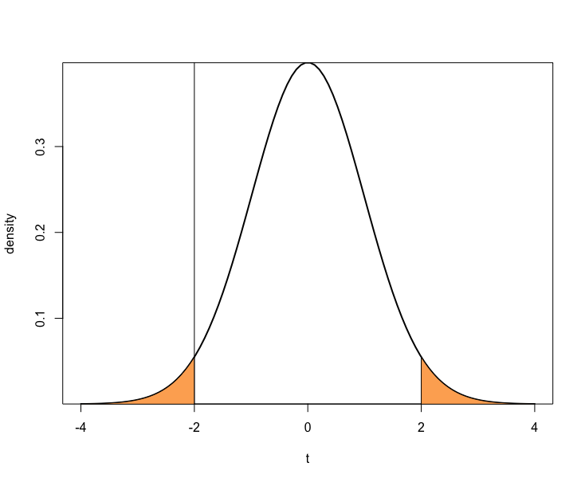

Research Methods for Global Studies
Class 5: Hypothesis Testing and Relationships Between Variables
Estimators
- Bias
- Efficiency
Maximum Likelihood Estimators
- Estimate that is most consistent with the data -- that maximizes the likelihood
Hypothesis Testing
Hypothesis
- A statement about a population -- usually about the value of a parameter or parameters
- Usually phrased as null hypothesis ($H_0$) vs. alternative hypothesis ($H_a$)
Significance Test
- Evaluates hypothesis based on evidence from a sample
- Usually focuses on whether sampling variation can be ruled out as cause of observed differences
- 5 parts:
- Assumptions
- Hypothesis
- Test Statistic
- p-value
- Conclusion
Assumptions
- Type of data
- Randomization
- Population distribution
- Sample size
Hypothesis
- $H_0$ vs. $H_a$
Test statistic
- Summarizes how far estimate falls from parameter value in $H_0$.
p-value
- If $H_0$ were true, what is the probability that the test statistic would be at least as extreme as the observed value?
Conclusion
- p-value
- either reject $H_0$ and accept $H_a$ or fail to reject $H_0$
Example: Student Height
- We have been told that the average height among students is 70 inches. We draw a sample of 100 students and measure their height. The mean is 69.8 inches with a sample standard deviation of 1.
Example: Student Height
Assumptions
- random sample
- approximately normal population distribution
Example: Student Height
Hypothesis
- $H_0$: population mean is 70 ($\mu=70$)
- $H_a$: population mean is not 70 ($\mu\neq70$)
Example: Student Height
Test statistic
$$t = \frac{\bar{y} - \mu_0}{se} = \frac{69.8 - 70}{0.1} = -2$$where
$$se = \frac{s}{\sqrt{n}} = \frac{1}{\sqrt{100}} = .1$$Example: Student Height
p-value
Example: Student Height
p-value
Example: Student Height
p-value
Normal Curve Tail ProbabilitiesExample: Student Height
p-value
> 2*(pt(-2, df=99))
[1] 0.04823969Example: Student Height
Conclusion
$$p=.048$$so what?
Choosing $\alpha$-level
- Type I error: rejecting $H_0$ when it is true.
- Type II error: failing to reject $H_0$ when it is false.
Relationships Between Variables
Is Height Related to Shoe Size
Is Height Related to Shoe Size

Prediction Equation
$$\hat{y} = a + bx$$Ordinary Least Squares Calculations
$$b = \frac{\sum\left(x - \bar{x}\right)\left(y - \bar{y}\right)}{\sum\left(x-\bar{x}\right)^2}$$$$a = \bar{y} - b\bar{x}$$
Correlation
- a standardized version of the slope in the regression equation
Example: Student Height
R ScriptDataset
Multiple variables
$$\hat{y} = \alpha + \beta_1x_1 + \beta_2x_2$$Multiple variables
| Dependent variable: | |
| change | |
| setting | 0.271** |
| (0.108) | |
| effort | 0.968*** |
| (0.225) | |
| Constant | -14.451* |
| (7.094) | |
| Observations | 20 |
| Adjusted R2 | 0.707 |
| Note: | *p<0.1; **p<0.05; ***p<0.01 |
Visualizing in 3-Dimensional Space
3DCategorical Independent Variables
$$\hat{y} = \alpha + \beta_1{x_1} + \beta_2{\textrm{D}}$$Categorical Independent Variables
| Dependent variable: | |
| change | |
| setting | 0.169 |
| (0.106) | |
| effort.Moderate | 4.144 |
| (3.191) | |
| effort.Strong | 19.448*** |
| (3.729) | |
| Constant | -5.954 |
| (7.166) | |
| Observations | 20 |
| Adjusted R2 | 0.764 |
| Note: | *p<0.1; **p<0.05; ***p<0.01 |
Visualizing Categorical Differences
Visualizing the Model
Interaction Terms
$$\hat{y} = \alpha + \beta_1x_1 + \beta_2\textrm{D} + \beta_3x_1\textrm{D}$$Interaction Terms
| Dependent variable: | |
| change | |
| setting | 0.184 |
| (0.140) | |
| effortModerate | 9.845 |
| (15.575) | |
| effortStrong | -19.595 |
| (50.770) | |
| setting:effortModerate | -0.087 |
| (0.233) | |
| setting:effortStrong | 0.457 |
| (0.604) | |
| Constant | -6.880 |
| (9.317) | |
| Observations | 20 |
| Adjusted R2 | 0.745 |
| Note: | *p<0.1; **p<0.05; ***p<0.01 |
Visualizing the Model

Interacting Continuous Variables
$$\hat{y} = \alpha + \beta_1x_1 + \beta_2x_2 + \beta_3x_1x_2$$Interacting Continuous Variables
| Dependent variable: | |
| change | |
| setting | 0.189 |
| (0.162) | |
| effort | -0.039 |
| (1.473) | |
| setting:effort | 0.013 |
| (0.019) | |
| Constant | -8.502 |
| (11.218) | |
| Observations | 20 |
| Adjusted R2 | 0.698 |
| Note: | *p<0.1; **p<0.05; ***p<0.01 |
Visualizing in 3-Dimensional Space
3DBeyond Straight Lines
$$\hat{y} = \alpha + \beta_1x_1 + \beta_2x_1^2$$Beyond Straight Lines
| Dependent variable: | |
| change | |
| setting | -0.690 |
| (1.064) | |
| setting_sq | 0.009 |
| (0.008) | |
| Constant | 14.721 |
| (33.925) | |
| Observations | 20 |
| R2 | 0.492 |
| Adjusted R2 | 0.432 |
| Residual Std. Error | 8.903 (df = 17) |
| Note: | *p<0.1; **p<0.05; ***p<0.01 |
Beyond Straight Lines

Comparing Models
| Dependent variable: | ||
| change | ||
| (1) | (2) | |
| setting | 0.505*** | -0.690 |
| (0.131) | (1.064) | |
| setting_sq | 0.009 | |
| (0.008) | ||
| Constant | -22.125** | 14.721 |
| (9.642) | (33.925) | |
| Observations | 20 | 20 |
| Adjusted R2 | 0.423 | 0.432 |
| Residual Std. Error | 8.973 (df = 18) | 8.903 (df = 17) |
| Note: | *p<0.1; **p<0.05; ***p<0.01 | |
Binary Dependent Variables
- Logit regression models log odds of outcome
- Results can be interpreted in terms of probability